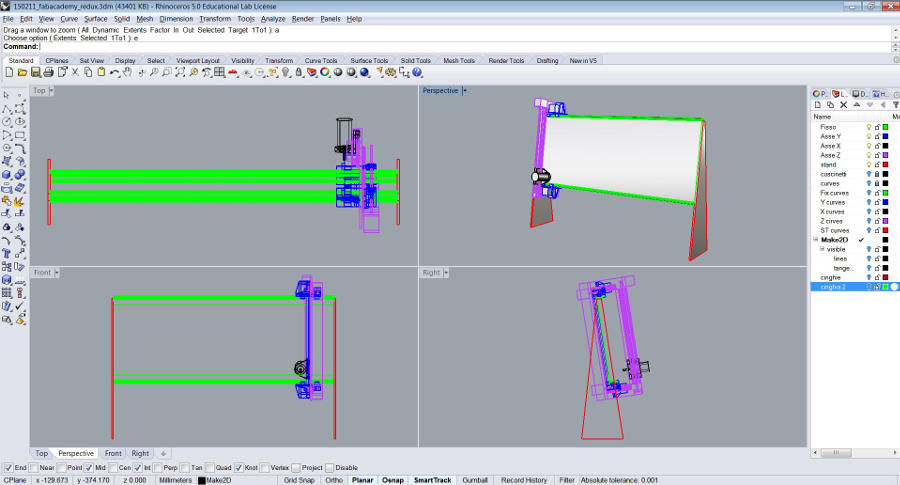

02. 3D model of the final project
Components and parts
This machine is moving in a different way from other CNC routers. in particular the working piece is standing still, supported by two stands on the sides. The Y axis is parallel to the ground, the X axis is (almost) perpendicular, and Z axis is perpendicular to the piece.

A - Y movement B - Spindle C - X movement D - Y rail E - Stand F - Working piece
Details
The most tricky part is probably how to move the machine along Y. I started following this solution
 The first solution to test is to use a circular belt moved by a stepper that use a secont linear belt glued to the rail as a rack.
The first solution to test is to use a circular belt moved by a stepper that use a secont linear belt glued to the rail as a rack.

A - Circular belt B - Pulley C - Y motor D - Linear belt (rack)
3D Design
Being a designer I'm used to different CADs, since the university I've used Solidworks, Rhinoceros, 3D studio max, Autocad, Pro-E, blender, and so on. Lately I decided to focus on Rhinoceros, being cheap enough to be bought even for a semi-professional use. It's also quite flexible, adjustable with different plug-ins (grasshopper and firefly for instance) and It's compatible with python and rhinoscript.
The best tool to do the mechanical design of the machine would probably be something like Solidworks, but I decided to use Rhino also to test the possible limitations

3D overview
In the box below you can see an overview od the project. Everything but the two main rails are attached to the "O" frame. The traslations along Z axis are possible moving the entire structure perpendicular to the panel.